Local immune response to food antigens drives meal-induced abdominal pain
Up to 20% of people worldwide develop gastrointestinal symptoms following a meal , leading to decreased quality of life, substantial morbidity and high medical costs. Although the interest of both the scientific and lay communities in this issue has increased markedly in recent years, with the worldwide introduction of gluten-free and other diets, the underlying mechanisms of food-induced abdominal complaints remain largely unknown. Here we show that a bacterial infection and bacterial toxins can trigger an immune response that leads to the production of dietary-antigen-specifc IgE antibodies in mice, which are limited to the intestine. Following subsequent oral ingestion of the respective dietary antigen, an IgE- and mast-cell dependent mechanism induced increased visceral pain. This aberrant pain signaling resulted from histamine receptor H1-mediated sensitization of visceral afferents. Moreover, injection of food antigens (gluten, wheat, soy and milk) into the rectosigmoid mucosa of patients with irritable bowel syndrome induced local oedema and mast cell activation. Our results identify and characterize a peripheral mechanism that underlies food-induced abdominal pain, thereby creating new possibilities for the treatment of irritable bowel syndrome and related abdominal pain disorders.(Nature )
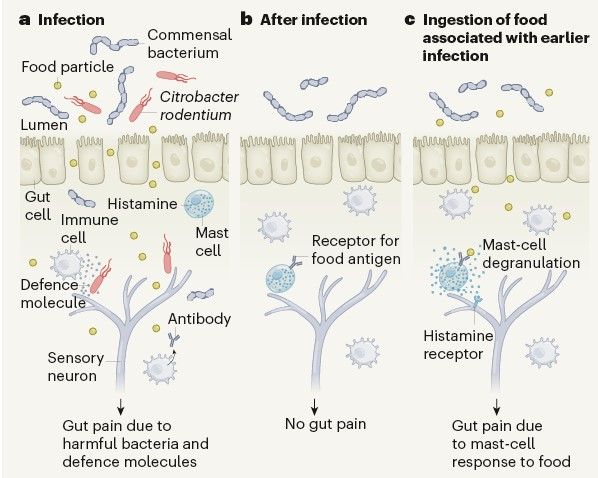
Transcription factors PILs directly interact with SPLs and repress tillering/branching in plants
• Tillering is an important parameter of plant architecture in cereal crops. In this study, we identified the PHYTOCHROME-INTERACTING FACTOR-LIKE (PIL) family transcription factors as new repressors of tillering in cereal crops. • Using biochemical and genetic approaches, we explore the roles of TaPIL1 in regulating wheat plant architecture. We found that the PIF-like protein TaPIL1 controls tiller number in wheat. • Overexpression of TaPIL1 reduces wheat tiller number; additionally, overexpression of TaPIL1-SRDX increases wheat tiller number. Furthermore, we show that TaPIL1 activates the transcriptional expression of TaTB1; moreover, TaPIL1 physically interacts with TaSPL3/17, which are activators of TaTB1 transcription. In rice, overexpression and loss-of-function mutations of OsPIL11 reduce or increase tiller number by regulating the expression of OsTB1. In Arabidopsis, we demonstrate that PIF4 interacts with SPL9 to inhibit shoot branching. • This study reveals that PIL family transcription factors directly interact with SPLs and play an important role in repressing tillering/branching in plants.(NEW PHYTOLOGIST)
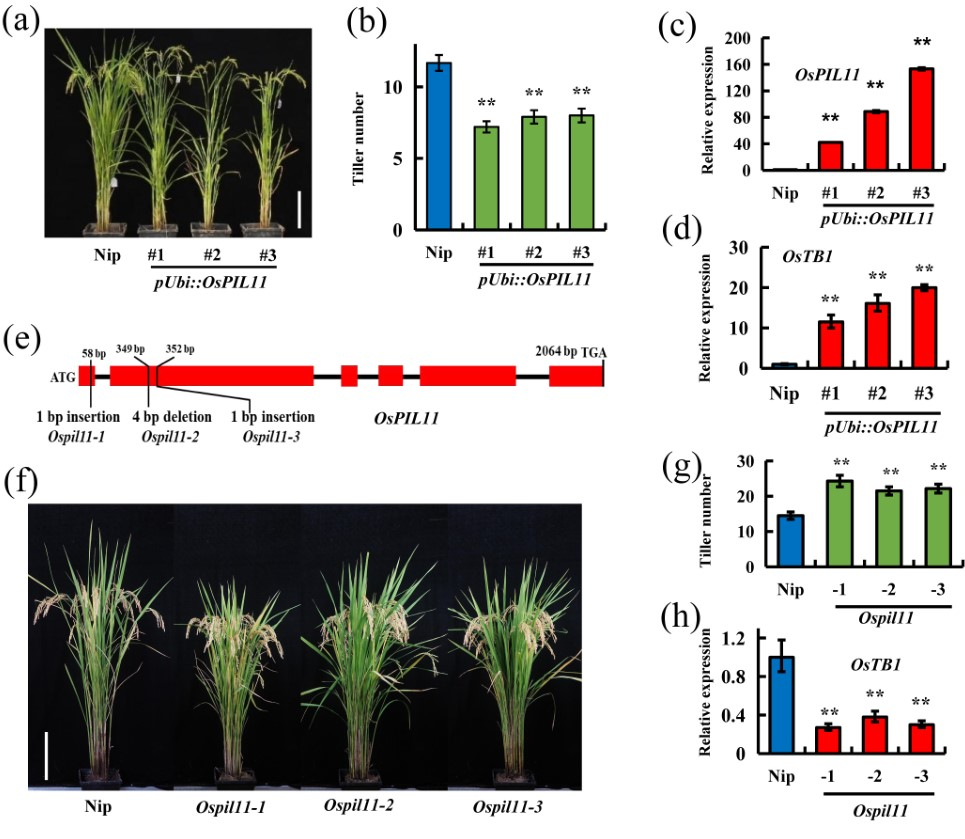
Salt responsive alternative splicing of a RING finger E3 ligase modulates the salt stress tolerance by fine-tuning the balance of COP9 signalosome subunit 5A
Increasing evidence points to the tight relationship between alternative splicing (AS) and the salt stress response in plants. However, the mechanisms linking these two phenomena remain unclear. In this study, we have found that Salt-Responsive Alternatively Spliced gene 1 (SRAS1), encoding a RING-Type E3 ligase, generates two splicing variants: SRAS1.1 and SRAS1.2, which exhibit opposing responses to salt stress. The salt stress-responsive AS event resulted in greater accumulation of SRAS1.1 and a lower level of SRAS1.2. Comprehensive phenotype analysis showed that overexpression of SRAS1.1 made the plants more tolerant to salt stress, whereas overexpression of SRAS1.2 made them more sensitive. In addition, we successfully identified the COP9 signalosome 5A (CSN5A) as the target of SRAS1. CSN5A is an essential player in the regulation of plant development and stress. The full-length SRAS1.1 promoted degradation of CSN5A by the 26S proteasome. By contrast, SRAS1.2 protected CSN5A by competing with SRAS1.1 on the same binding site. Thus, the salt stress-triggered AS controls the ratio of SRAS1.1/SRAS1.2 and switches on and off the degradation of CSN5A to balance the plant development and salt tolerance. Together, these results provide insights that salt-responsive AS acts as post-transcriptional regulation in mediating the function of E3 ligase.(PLOS GENETICS)
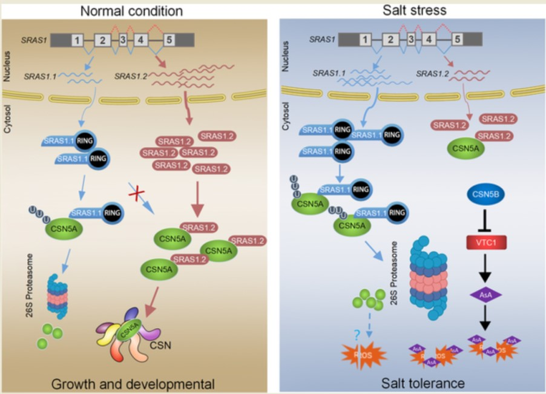
Stress granule associated TaMBF1c confers thermotolerance through regulating specific mRNA translation in wheat (Triticum aestivum)
Heat stress is a major limiting factor for global wheat production and causes dramatic yield loss worldwide. The TaMBF1c is up-regulated in response to heat stress in wheat. Understanding the molecular mechanisms associated with heat stress responses will pave the way to improve wheat thermotolerance in future. Through CRISPR/Cas9-based gene editing, polysome profiling coupled with RNA-seq analysis, and protein–protein interaction, we proved that TaMBF1c conferred heat response via regulating specific gene translation in wheat. Results showed that TaMBF1c is evolutionarily conserved in diploid, tetraploid and hexaploid wheat species, and its knock-down and knock-out lines show increased heat sensitivity. TaMBF1c is co-localized with stress granule complex and interacts with TaG3BP. TaMBF1c affects translation efficiency of a subset of heat responsive genes, which are significantly enriched in the ‘sequence-specific DNA binding’ term. Moreover, gene expression network analysis demonstrated that TaMBF1c is closely associated with the translation of heat shock proteins. Our findings reveal a contribution of TaMBF1c regulating heat stress response via translation process, and provide new target for improving heat tolerance in wheat breeding programs.(NEW PHYTOLOGIST)

N-terminal truncated RHT-1 proteins generated by translational reinitiation cause semi-dwarfing of wheat Green Revolution alleles
The unprecedented wheat yield increases during the Green Revolution were achieved through the introduction of the Reduced height (Rht)-B1b and Rht-D1b semi-dwarfing alleles. These Rht-1 alleles encode growth-repressing DELLA genes containing a stop codon within their open reading frame that confers gibberellin (GA)-insensitive semi-dwarfism. In this study, we successfully took the hurdle of detecting wild-type RHT-1 proteins in different wheat organs and confirmed their degradation in response to GAs. We further demonstrated that Rht-B1b and Rht-D1b produce N-terminal truncated proteins through translational reinitiation. Expression of these N-terminal truncated proteins in transgenic lines and in Rht-D1c, an allele containing multiple Rht-D1b copies, demonstrated their ability to cause strong dwarfism, resulting from their insensitivity to GA-mediated degradation. N-terminal truncated proteins were detected in spikes and nodes, but not in the aleurone layers. Since Rht-B1b and Rht-D1b alleles cause dwarfism but have wild-type dormancy, this finding suggests that tissue-specific differences in translational reinitiation may explain why the Rht-1 alleles reduce plant height without affecting dormancy. Taken together, our findings not only reveal the molecular mechanism underlying the Green Revolution but also demonstrate that translational reinitiation in the main open reading frame occurs in plants.(Molecular Plant)
RNA demethylation increases the yield and biomass of rice and potato plants in field trials
RNA N6-methyladenosine (m6A) modifications are essential in plants. Here, we show that transgenic expression of the human RNA demethylase FTO in rice caused a more than threefold increase in grain yield under greenhouse conditions. In field trials, transgenic expression of FTO in rice and potato caused ~50% increases in yield and biomass. We demonstrate that the presence of FTO stimulates root meristem cell proliferation and tiller bud formation and promotes photosynthetic efficiency and drought tolerance but has no effect on mature cell size, shoot meristem cell proliferation, root diameter, plant height or ploidy. FTO mediates substantial m6A demethylation (around 7% of demethylation in poly(A) RNA and around 35% decrease of m6A in non-ribosomal nuclear RNA) in plant RNA, inducing chromatin openness and transcriptional activation. Therefore, modulation of plant RNA m6A methylation is a promising strategy to dramatically improve plant growth and crop yield.(Nature Biotechnology)
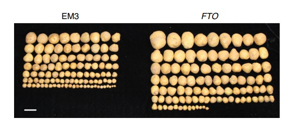
A donor-DNA-free CRISPR/Cas-based approach to gene knock-up in rice
Structural variations (SVs), such as inversion and duplication, contribute to important agronomic traits in crops . Pan-genome studies revealed that SVs were a crucial and ubiquitous force driving genetic diversification. Although genome editing can effectively create SVs in plants and animals the potential of designed SVs in breeding has been overlooked. Here, we show that new genes and traits can be created in rice by designed large-scale genomic inversion or duplication using CRISPR/Cas9. A 911 kb inversion on chromosome 1 resulted in a designed promoter swap between CP12 and PPO1, and a 338 kb duplication between HPPD and Ubiquitin2 on chromosome 2 created a novel gene cassette at the joint, promoterUbiquitin2::HPPD. Since the original CP12 and Ubiquitin2 genes were highly expressed in leaves, the expression of PPO1 and HPPD in edited plants with homozygous SV alleles was increased by tens of folds and conferred sufficient herbicide resistance in field trials without adverse effects on other important agronomic traits. CRISPR/Cas-based genome editing for gene knock-ups has been generally considered very difficult without inserting donor DNA as regulatory elements. Our study challenges this notion by providing a donor-DNA-free strategy, thus greatly expanding the utility of CRISPR/Cas in plant and animal improvements.(Nature Plants)
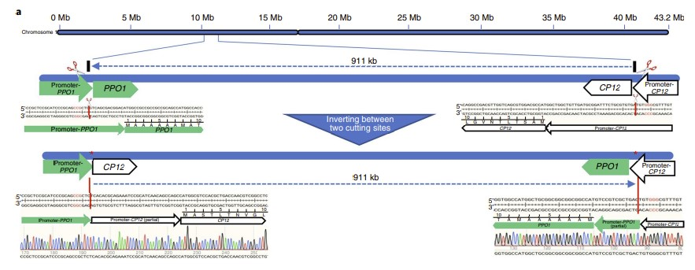
Modified expression of TaCYP78A5 enhances grain weight with yield potential by accumulating auxin in wheat (Triticum aestivum L.)
Increasing grain yield has always been the primary goal of crop breeding. KLUH/CYP78A5 has been shown to affect seed size in several plant species, but the relevant molecular mechanism is still unclear and there are no reports of this gene contributing to yield. Here, we demonstrate that modified expression of TaCYP78A5 can enhance wheat grain weight and grain yield per plant by accumulating auxin. TaCYP78A5 is highly expressed in maternal tissues, including ovary and seed coat during wheat development. The constitutive overexpression of TaCYP78A5 leads to significantly increased seed size and weight but not grain yield per plant due to the strengthening of apical dominance. However, localized overexpression of TaCYP78A5 in maternal integument enhances grain weight and grain yield per plant by 4.3%-18.8% and 9.6%-14.7%, respectively, in field trials. Transcriptome and hormone metabolome analyses reveal that TaCYP78A5 participates in auxin synthesis pathway and promotes auxin accumulation and cell wall remodelling in ovary. Phenotype investigation and cytological observation show that localized overexpression of TaCYP78A5 in ovary results in delayed flowering and prolonged proliferation of maternal integument cells, which promote grain enlargement. Moreover, naturally occurring variations in the promoter of TaCYP78A5-2A contribute to thousand-grain weight (TGW) and grain yield per plant of wheat;TaCYP78A5-2A haplotype Ap-HapII with higher activity is favourable for improving grain weight and grain yield per plant and has been positively selected in wheat breeding. Then, a functional marker of TaCYP78A5 haplotype Ap-HapII is developed for marker-assisted selection in wheat grain and yield improvement.(Plant Biotechnology Journal )
TMK-based cell-surface auxin signalling activates cell-wall acidification
The phytohormone auxin controls many processes in plants, at least in part through its regulation of cell expansion. The acid growth hypothesis has been proposed to explain auxin-stimulated cell expansion for five decades, but the mechanism that underlies auxin-induced cell-wall acidification is poorly characterized. Auxin induces the phosphorylation and activation of the plasma membrane H+ -ATPase that pumps protons into the apoplast, yet how auxin activates its phosphorylation remains unclear. Here we show that the transmembrane kinase (TMK) auxin-signalling proteins interact with plasma membrane H+-ATPases, inducing their phosphorylation, and thereby promoting cell-wall acidification and hypocotyl cell elongation in Arabidopsis. Auxin induced interactions between TMKs and H+ -ATPases in the plasma membrane within seconds, as well as TMK-dependent phosphorylation of the penultimate threonine residue on the H+-ATPases. Our genetic, biochemical and molecular evidence demonstrates that TMKs directly phosphorylate plasma membrane H+ -ATPase and are required for auxin-induced H+ -ATPase activation, apoplastic acidification and cell expansion. Thus, our findings reveal a crucial connection between auxin and plasma membrane H+ -ATPase activation in regulating apoplastic pH changes and cell expansion through TMK-based cell surface auxin signalling.(Nature)
Cell surface and intracellular auxin signalling for H+ fluxes in root growth
Growth regulation tailors development in plants to their environment. A prominent example of this is the response to gravity, in which shoots bend up and roots bend down. This paradox is based on opposite effects of the phytohormone auxin, which promotes cell expansion in shoots while inhibiting it in roots via a yet unknown cellular mechanism. Here, by combining microfluidics, live imaging, genetic engineering and phosphoproteomics in Arabidopsis thaliana, we advance understanding of how auxin inhibits root growth. We show that auxin activates two distinct, antagonistically acting signalling pathways that converge on rapid regulation of apoplastic pH, a causative determinant of growth. Cell surface-based TRANSMEMBRANE KINASE1 (TMK1) interacts with and mediates phosphorylation and activation of plasma membrane H+ -ATPases for apoplast acidification, while intracellular canonical auxin signalling promotes net cellular H+ influx, causing apoplast alkalinization. Simultaneous activation of these two counteracting mechanisms poises roots for rapid, fine-tuned growth modulation in navigating complex soil environments(Nature)
Brassinosteroids modulate nitrogen physiological response and promote nitrogen uptake in maize (Zea mays L.)
Brassinosteroids (BRs) are steroid hormones that function in plant growth and development and response to environmental stresses and nutrient supplies. However, few studies have investigated the effect of BRs in modulating the physiological response to nitrogen (N) supply in maize. In the present study, BR signaling defificient mutant zmbri1-RNAi lines and exogenous application of 2,4-epibrassinolide (eBL) were used to study the role of BRs in the regulation of physiological response in maize seedlings supplied with N. Exogenous application of eBL increased primary root length and plant biomass, but zmbri1 plants showed shorter primary roots and less plant biomass than wild-type plants under low N (LN) and normal N (NN) conditions. LN induced the expression of the BR signaling-associated genes ZmDWF4, ZmCPD, ZmDET2, and ZmBZR1 and the production of longer primary roots than NN. Knockdown of ZmBRI1 weakened the biological effects of LN-induced primary root elongation. eBL treatment increased N accumulation in shoots and roots of maize seedlings exposed to LN or NN treatment. Correspondingly, zmbri1 plants showed lower N accumulation in shoots and roots than wild-type plants. Along with reduced N accumulation, zmbri1 plants showed lower 〖NO〗_3^- flfluxes and 〖15_NO〗_3^- uptake. The expression of nitrate transporter (NRT) genes (ZmNPF6.4, ZmNPF6.6, ZmNRT2.1, ZmNRT2.2) was lower in zmbri1 than in wild-type roots, but eBL treatments up-regulated the transcript expression of NRT genes. Thus, BRs modulated N physiological response and regulated the transcript expression of NRT genes to promote N uptake in maize.(The Crop Journal)
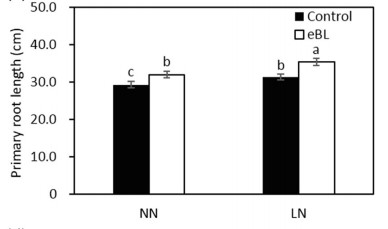
The wheat SHORT ROOT LENGTH 1 gene TaSRL1 controls root length in an auxin-dependent pathway
The root is the main organ for water and nutrient uptake and sensing environmental stimuli in the soil. The optimization of root system architecture contributes to stress tolerance and yield improvement. ERF (ETHYLENE RESPONSIVE FACTOR) is one of the plant-specific transcription factor families associated with various developmental processes and stress tolerance. We cloned a novel ERF transcription factor gene TaSRL1 (SHORT ROOT LENGTH 1) from wheat (Triticum aestivum) which is mainly expressed in root. Ectopic expression of TaSRL1 in rice resulted in short root length and plant height. TaSRL1 regulated expression of genes related to auxin synthesis, transport, and signaling. Further studies revealed that TaSRL1 induced expression of the auxin transport gene TaPIN2 by directly binding to its promoter, while the interaction of TaSRL1 and TaTIFY9 repressed TaPIN2 expression. Sequence polymorphisms and association analysis showed that TaSRL1-4A was associated with root depth and angle, plant height, and 1000-grain weight of wheat. The haplotype Hap-4A-2 with shallow roots, short plant height, and high 1000-grain weight has been positively selected in the Chinese wheat breeding process. We demonstrated that TaSRL1 functions as a direct regulator of TaPIN2 in the auxin-dependent pathway, and integrates auxin and jasmonate signaling by interacting with TaTIFY9 to repress root growth. Furthermore, the molecular marker of TaSRL1-4A is valuable for the improvement of the root system, plant architecture, and yield in the wheat breeding process.(Journal of Experimental Botany)
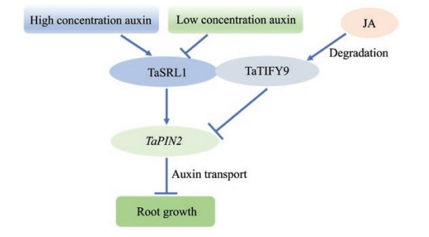
Combined linkage and association mapping reveals two major QTL for stripe rust adult plant resistance in Shaanmai 155 and their haplotype variation in common wheat germplasm
The development and deployment of diverse resistance sources in new wheat cultivars underpin the durable control of stripe rust. In the present study, two loci for adult plant resistance (APR), QYrSM155.1 and QYrSM155.2, were identified in the Chinese wheat breeding line Shaanmai 155. QYrSM155.1 was mapped to a 3.0-cM interval between the single-nucleotide polymorphism (SNP) markers AX-109583610 and AX-110907562 on chromosome arm 2BL. QYrSM155.2 was mapped to a 2.1-cM interval flanked by the SNP markers AX-110378556 and AX-86173526 on chromosome arm 7AS. A genome-wide association study was used to identify markers associated with APR in a panel of 411 spring wheat lines. Thirteen and 11 SNPs were significantly associated with QYrSM155.1 and QYrSM155.2, respectively, corresponding to physical intervals of 653.75–655.52 Mb on 2BL and 81.63–83.93 Mb on 7AS. To characterize the haplotype variation and the distribution of these QTL, haplotype analysis was performed based on these SNPs in an independent panel of 1,101 worldwide wheat accessions. Three major haplotypes (2B_h1, 2B_h2, and 2B_h3) for QYrSM155.1 and four major haplotypes (7A_h1, 7A_h2, 7A_h3, and 7A_h4) for QYrSM155.2 were identified. Accessions individually harboring QYrSM155.1_h1 and QYrSM155.2_h1 haplotypes and their combination displayed resistance. Additional assays of 1,306 current Chinese cultivars and breeding lines using markers flanking QYrSM155.1 and QYrSM155.2 indicated that the resistance haplotypes of the two QTL were present in respectively 1.45% and 14.16% of lines. Increasing resistance haplotype frequencies at these two loci using marker-assisted selection should benefit wheat production in China.(The Crop Journal)
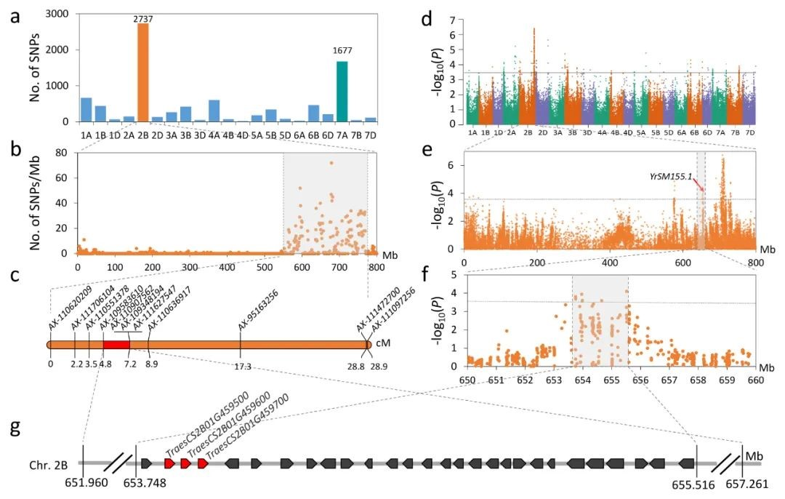
Identification and characterization of Sr22b, a new allele of the wheat stem rust resistance gene Sr22 effective against the Ug99 race group
Wheat stem (or black) rust, caused by Puccinia graminis f. sp. tritici (Pgt), has been historically among the most devastating global fungal diseases of wheat. The recent occurrence and spread of new virulent races such as Ug99 have prompted global efforts to identify and isolate more effective stem rust resistance (Sr) genes. Here, we report the map-based cloning of the Ug99- effective SrTm5 gene from diploid wheat Triticum monococcum accession PI 306540 that encodes a typical coiled-coil nucleotide-binding leucine-rich repeat protein. This gene, designated as Sr22b, is a new allele of Sr22 with a rare insertion of a large (13.8-kb) retrotransposon into its second intron. Biolistic transformation of an ~112-kb circular bacterial artificial chromosome plasmid carrying Sr22b into the susceptible wheat variety Fielder was sufficient to confer resistance to stem rust. In a survey of 168 wheat genotypes, Sr22b was present only in cultivated T. monococcum subsp. monococcum accessions but absent in all tested tetraploid and hexaploid wheat lines. We developed a diagnostic molecular marker for Sr22b and successfully introgressed a T. monococcum chromosome segment containing this gene into hexaploid wheat to accelerate its deployment and pyramiding with other Sr genes in wheat breeding programmes. Sr22b can be a valuable component of gene pyramids or transgenic cassettes combining different resistance genes to control this devastating disease.(Plant Biotechnology Journal)
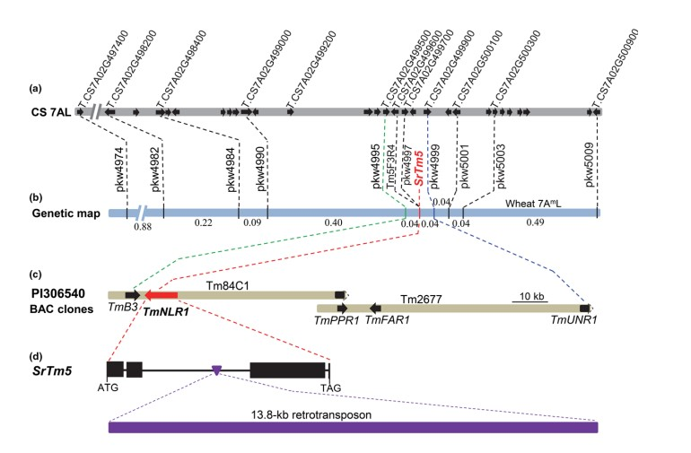
Nucleocytoplasmic trafficking and turnover mechanisms of BRASSINAZOLE RESISTANT1 in Arabidopsis thaliana
Regulation of the nucleocytoplasmic trafficking of signaling components, especially transcription factors, is a key step of signal transduction in response to extracellular stimuli. In the brassinosteroid (BR) signal transduction pathway, transcription factors from the BRASSINAZOLE RESISTANT1 (BZR1) family are essential in mediating BR-regulated gene expression. The subcellular localization and transcriptional activity of BZR1 are tightly regulated by reversible protein phosphorylation; however, the underlying mechanism is not well understood. Here, we provide evidence that both BZR1 phosphorylation and dephosphorylation occur in the nucleus and that BR-regulated nuclear localization of BZR1 is independent from its interaction with, or dephosphorylation by, protein phosphatase 2A. Using a photoconvertible fluorescent protein, Kaede, as a living tag to distinguish newly synthesized BZR1 from existing BZR1, we demonstrated that BR treatment recruits cytosolic BZR1 to the nucleus, which could explain the fast responses of plants to BR. Additionally, we obtained evidence for two types of protein turnover mechanisms that regulate BZR1 abundance in plant cells: a BR- and 26S proteosome–independent constitutive degradation mechanism and a BR-activated 26S proteosome–dependent proteolytic mechanism. Finally, treating plant cells with inhibitors of 26S proteosome induces the nuclear localization and dephosphorylation of BZR1, even in the absence of BR signaling. Based on these results, we propose a model to explain how BR signaling regulates the nucleocytoplasmic trafficking and reversible phosphorylation of BZR1. (PNAS)
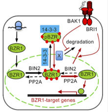
Variation in cis-Regulation of a NAC Transcription Factor Contributes to Drought Tolerance in Wheat
Drought is a major environmental factor limiting wheat production worldwide, and developing drought-tolerant cultivars is a central challenge for wheat breeders globally. It is therefore important to identify genetic components determining drought tolerance in wheat. Here, we identified a NAC gene (TaNAC071-A) by genome-wide association study, which is tightly associated with drought tolerance in wheat. TaNAC071-A knockdown in wheat attenuates plant drought tolerance, whereas its overexpression significantly enhanced drought tolerance through improved water-use efficiency and activated expression of stress-responsive genes. This heightened water-saving mechanism further mitigates the yield loss caused by water deficit. Further candidate gene association analysis showed that a 108-bp insertion in the promoter of TaNAC071-A alters its expression level and contributes to variation in drought tolerance among wheat accessions. This insertion contains two MYB cis-regulatory elements (CREs) that can be directly bound by the MYB transcription activator, TaMYBL1, thereby leading to increased TaNAC071-A expression and plant drought tolerance. In addition, introgression of this 108-bp insertion allele TaNAC071-AIn-693 into drought-sensitive cultivars improves drought tolerance, thus demonstrating a valuable genetic resource for wheat breeding. These findings highlight a major breakthrough in determining the genetic basis underlying phenotypic variation in wheat drought tolerance, and reveal the molecular mechanism and potential application of the CRE-containing indels in regulating gene expression involved in important agronomical traits.(MOLECULAR PLANT.)
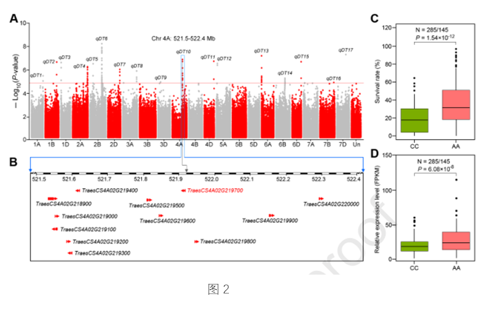
Rht24b, an ancient variation of TaGA2ox-A9, reduces plant height without yield penalty in wheat
Rht-B1b and Rht-D1b, the ‘Green Revolution’ (GR) genes, greatly improved yield potential of wheat under nitrogen fertilizer application, but reduced coleoptile length, seedling vigor and grain weight. Thus, mining alternative reduced plant height genes without adverse effects is urgently needed. We isolated the causal gene of Rht24 through map-based cloning and characterized its function using transgenic, physiobiochemical and transcriptome assays. We confirmed genetic effects of the dwarfing allele Rht24b with an association analysis and also traced its origin and distribution. Rht24 encodes a gibberellin (GA) 2-oxidase, TaGA2ox-A9. Rht24b conferred higher expression of TaGA2ox-A9 in stems, leading to a reduction of bioactive GA in stems but an elevation in leaves at the jointing stage. Strikingly, Rht24b reduced plant height, but had no yield penalty; it significantly increased nitrogen use efficiency, photosynthetic rate and the expression of related genes. Evolutionary analysis demonstrated that Rht24b first appeared in wild emmer and was detected in more than half of wild emmer and wheat accessions, suggesting that it underwent both natural and artificial selection. These findings uncover an important genetic resource for wheat breeding and also provide clues for dissecting the regulatory mechanisms underlying GA-mediated morphogenesis and yield formation. (New Phytologist)
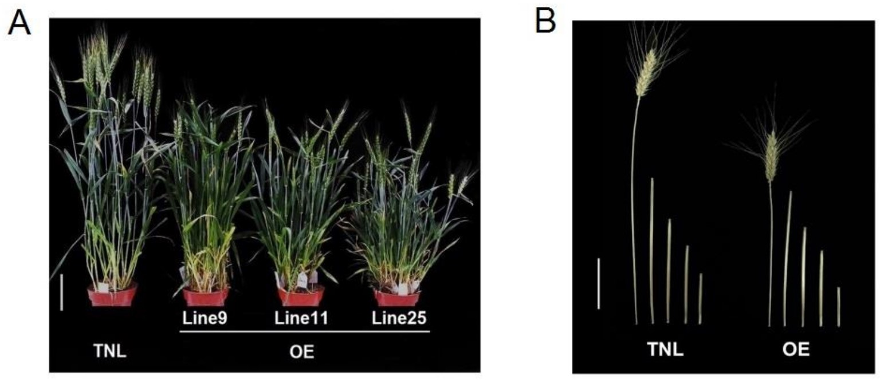
Development and regeneration of wheat–rice hybrid zygotes produced by in vitro fertilization system
Hybridization plays a decisive role in the evolution and diversification of angiosperms. However, the mechanisms of wide hybridization remain open because pre- and post-fertilization barriers limit the production and development of inter-subfamily/intergeneric zygotes, respectively. We examined hybridization between wheat and rice using an in vitro fertilization (IVF) system to bypass these barriers. Several gamete combinations of allopolyploid wheat–rice hybrid zygotes were successfully produced, and the developmental profiles of hybrid zygotes were analyzed. Hybrid zygotes derived from one rice egg cell and one wheat sperm cell ceased at the multicellular embryo-like structure stage. This developmental barrier was overcome by adding one wheat egg cell to the wheat–rice hybrid zygote. In the reciprocal combination, one wheat egg and one rice sperm cell, the resulting hybrid zygotes failed to divide. However, doubling the dosage of rice sperm cell allowed the hybrid zygotes to develop into plantlets. Rice chromosomes appeared to be progressively eliminated during the early developmental stage of these hybrid embryos, and c. 20% of regenerated plants showed abnormal morphology. These results suggest that hybrid breakdown can be overcome through optimization of gamete combinations, and the present hybrid will provide a new horizon for utilization of inter-subfamily genetic resources.(New Phytol )
UK trials first CRISPR-edited wheat in Europe
In a sign of the United Kingdom’s intentions to move away from European Union (EU) restrictions following Brexit, its Department for Environment, Food & Rural Affairs (DEFRA) has given scientists at Harpenden-based Rothamsted Research the go-ahead for the first field trials of gene-edited wheat made using CRISPR technology anywhere in the UK. The wheat has reduced amounts of the naturally occurring amino acid asparagine, which converts to the potentially carcinogenic chemical acrylamide when bread is baked or toasted. By knocking out the asparagine synthetase gene TaASN2, researchers have demonstrated more than a 90% reduction of asparagine concentrations in the grain of one line of edited wheat. The trials are expected to run for five years, measuring the amount of asparagine in the same wheat grain when grown in the field, as well as assessing other aspects such as yield and protein content. The aim is to produce ultra-low-asparagine, non-gene-modified wheat, according project leader Nigel Halford. Current EU regulations treat gene editing of crops the same as genetic modification, though in April the European Commission launched a review of its rules on genetically modified organisms, paving the way to a possible loosening of restrictions for plants resulting from gene-editing technology. DEFRA secretary George Eustice said at a farming conference last January that the UK, outside of the EU, was now free to make its own decisions based on the science, calling the current EU approach—enshrined in a 2018 European Court of Justice ruling— “flawed and stifling to scientific progress.(Nature Biotechnology)